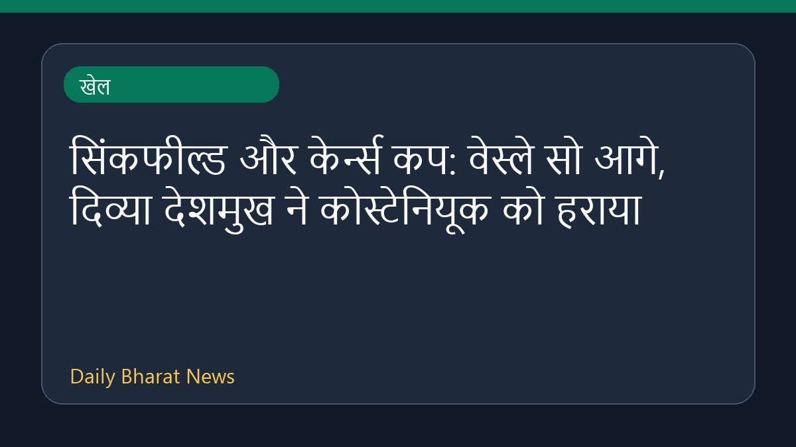

सिंकफील्ड और केर्न्स कप: वेस्ले सो आगे, दिव्या देशमुख ने कोस्टेनियूक को हराया

चेस.कॉम की रिपोर्ट के अनुसार, 2026 सिंकफील्ड और केर्न्स कप के तीसरे दौर में वेस्ले सो सिंकफील्ड कप में बढ़त बनाए हुए हैं। वहीं, दिव्या देशमुख ने अलेक्सांद्र कोस्टेनियूक को हराकर उनकी तीसरी हार तय की। इसके अलावा, प्रज्ञानानंद ने सिंकफील्ड कप में जावोखिर् सिंदारोव को मात दी। अन्य खेल खबरों में, ईस्ट बंगाल ने AFC CL 2 के लिए क्वालीफाई कर लिया है और TTFI को निलंबित कर दिया गया है। इन मुकाबलों से शतरंज जगत में रोमांचक प्रतिस्पर्धा देखने को मिल रही है।
मूल स्रोत: Sports News Sources
2026 Sinquefield & Cairns Cups Round 3: So Leads Sinquefield Cup; Divya Deals Kosteniuk 3rd Loss - Chess.com ↗
2026 Sinquefield & Cairns Cups Round 3: So Leads Sinquefield Cup; Divya Deals Kosteniuk 3rd Loss - Chess.com ↗